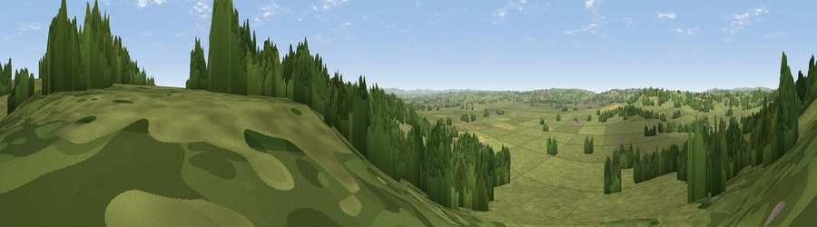

Viewpoint near Cucklington
#25676 in England · top 52% of its area beats it · near CucklingtonThe view, rendered

A 360° render of this exact spot computed from the terrain model, tree cover and land cover — summer colours, afternoon light, calibrated against photographs of famous viewpoints. Real trees, hedges and buildings will differ in detail.
The panorama
Grey silhouette: terrain skyline in each direction (720 bearings, Earth curvature and refraction included). Dashed green: skyline with trees (+15 m) and buildings (+8 m) as obstacles. Blue strip: how far the ground is visible on each bearing.
Where the view opens
Wedge length = distance to the farthest visible ground on that bearing (vegetation-aware). Rings at 10, 25 and 50 km.
What fills the view
74% grassland · 21% woodland · 3% cropland ·
Angular shares of the visible panorama (visual magnitude), not map area. Landscape diversity 0.31 (0–1 Shannon).
Key numbers
More beautiful places nearby
The staircase of upgrades: each row has a higher view potential than everything closer. Driving times are estimates from straight-line distance, calibrated against real road routing — check an actual route before setting out.
| Place | Direction | Drive | Score |
|---|---|---|---|
| Viewpoint near Cucklington | N · 1 km | ~4 min | 49.5 |
| Viewpoint near Stoke Trister | WNW · 2 km | ~6 min | 56.4 |
| Viewpoint near Penselwood | N · 3 km | ~7 min | 62.9 |
| Viewpoint near Penselwood | N · 6 km | ~13 min | 65.2 |
| Viewpoint near South Brewham | N · 8 km | ~15 min | 67.5 |
| Viewpoint near South Brewham | N · 8 km | ~16 min | 69.5 |
| Viewpoint near Stour Row | SE · 8 km | ~17 min | 70.0 |
| Long Knoll | NNE · 11 km | ~20 min | 74.6 |
51.04610, -2.34980 · source: screening · position refined by local search. Computed location — check access rights before visiting.